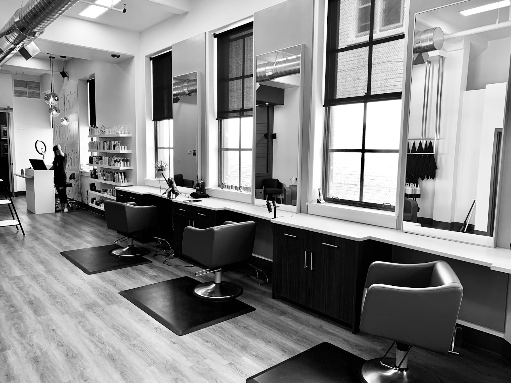
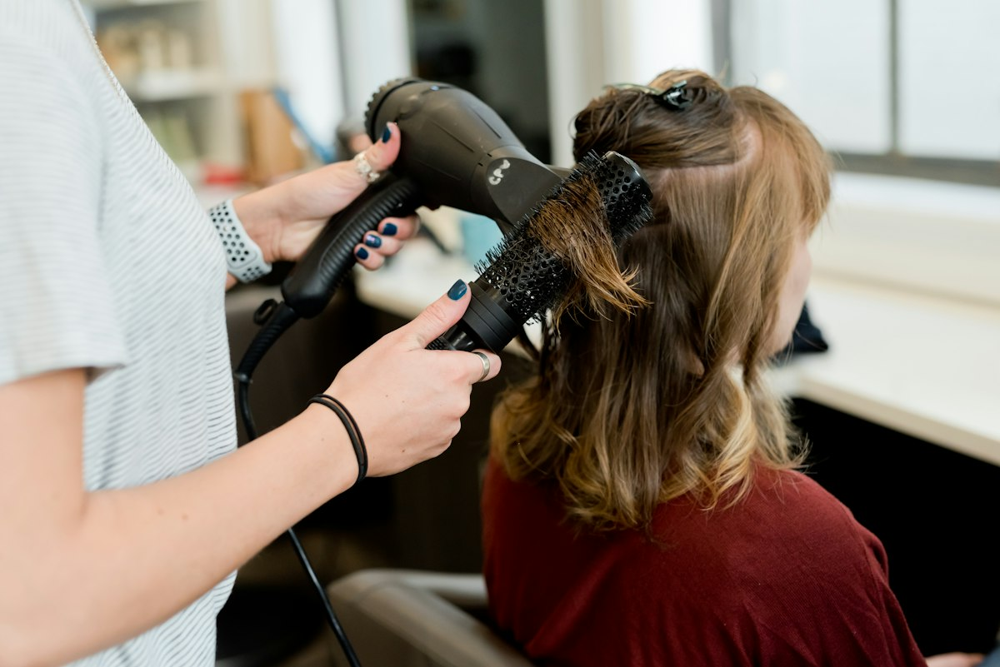

Fundamentos

Tricología Cosmética
Diagnóstico, evaluación de fibra y cuero cabelludo, y protocolos personalizados con el método DPT.


AV Studio Academy
Formación online en tricología cosmética, química del color y corrección profesional, liderada por América Villasmil.
Entrar a la academiaLa academia
AV Studio Academy organiza la experiencia de América Villasmil en formaciones claras, científicas y aplicables en salón, para quienes quieren dejar de trabajar a prueba y error.


Cursos
Tres formaciones complementarias: desde el diagnóstico de la fibra hasta la corrección avanzada de color.
Diagnóstico, evaluación de fibra y cuero cabelludo, y protocolos personalizados con el método DPT.

Química, formulación, melanina, oxidación y fundamentos científicos detrás de cada proceso de color.
Diagnostica, planifica y corrige manchas, bandas, reflejos no deseados y casos complejos con estrategia.

Método DPTMetodología
Cada formación combina ciencia, diagnóstico y práctica para que el alumno formule con criterio y proteja la fibra.
Evaluar fibra, historial y cuero cabelludo antes de intervenir.
Entender pH, pigmentos, oxidación y comportamiento real del cabello.
Pasar del caso al plan de trabajo, sin fórmulas memorizadas a ciegas.
Atmósfera
Servicios
La academia online se complementa con la mirada profesional de AV Studio en coloración, tratamientos y cuidado capilar.
Voces
“Dejé de improvisar en correcciones. Ahora diagnostico, planifico y protejo la fibra.”
Colorista · Programa de Corrección
“Por fin entendí qué ocurre dentro del cabello durante la decoloración y el color.”
Estilista · Ciencia del Color
“El método DPT me dio un orden claro para evaluar fibra y cuero cabelludo.”
Emprendedora · Tricología Cosmética
Blog

Guía práctica
Claves para ajustar saturación, tiempos y productos según el estado real de la fibra.
Leer artículo →
Ciencia del color
Entiende pigmentos residuales y elige el reflejo corrector con estrategia.
Leer artículo →Tricología
Límites del abordaje cosmético frente a señales que requieren valoración médica.
Leer artículo →